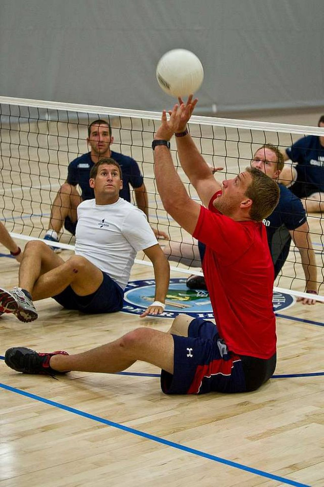
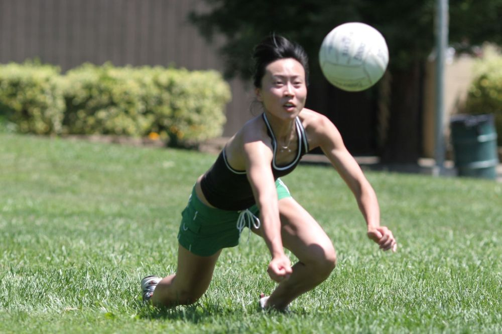
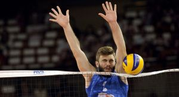

This is common way people pass the ball to their teammates so that they can hit it with powerful spike to the opponents. This play style really suitable to setter.

This is common way people pass the ball to their teammates so that they can hit it with powerful spike to the opponents. This play style really suitable to setter.

This is common way people play volleyball. This movement is sutibale for passing, transfer to other team and catch the ball from the opponent. This play style required player to have straight hand
.jpg)
For this play style, it is required player to hit the ball fast as possible so that the opponent can not catch the ball. This technique good timing to make it impossible to catch.

When the ball is passed over the line, the ball is considered out. The point will be given to the rival team.

There are 6 total positions in Volleyball.

Touching the net during Volleyball rally is prohibited even if it on accident. When player touched the net, the point will be given to the rival team.
{kind=link}
{kind=link}